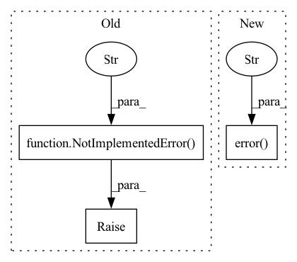

Pattern ID :31673

Before Change
This function is not supported in NeuralProphet.
raise NotImplementedError(
"Not required in NeuralProphet as the dataframe is automatically prepared using the private `_normalize` function."
)
def fit(self, df, **kwargs):
Fit the Prophet model.
After Change
This function is not supported in NeuralProphet.
log.error(
"Not required in NeuralProphet as the dataframe is automatically prepared using the private `_normalize` function."
)
def fit(self, df, **kwargs):
Fit the NeuralProphet model.
In pattern: SUPERPATTERN
Frequency: 3
Non-data size: 3
Instances
Fragment ID: 92391712
Project Name: ourownstory/neural_prophet
Commit Name: 147a7bdb434358d7f3afad333790f58591d37cc1
Time: 2022-10-17
Author: karl.richter@tum.de
File Name: neuralprophet/TorchProphet.py
M Class Name: TorchProphet
N Class Name: TorchProphet
M Method Name: setup_dataframe(3)
N Method Name: setup_dataframe(3)
M Parent Class: NeuralProphet
N Parent Class: NeuralProphet
M File Name: neuralprophet/TorchProphet.py
N File Name: neuralprophet/TorchProphet.py
M Start Line: 145
M End Line: 147
N Start Line: 153
N End Line: 155
'>
Before Change
has_pretrained_rat_model = os.path.isfile(f"{pretrained_model_name_or_path}/pytorch_model.bin")
if has_pretrained_rat_model:
if model_cls.__name__.startswith("AutoModel"):
raise NotImplementedError(
"`model_cls` cannot be an AutoModel class when loading a pretrained RATransformer. "
"Please use a specific `model_cls` class. "
"For example, for T5 with AutoModelForSeq2SeqLM, use `model_cls=T5ForConditionalGeneration`"
)
def model_cls_load_pretrained_model_prefix_function(function):
@functools.wraps(function)
def run(model, *args, **kwargs):
// change attention layers with relational ones, if not done before
After Change
pretrained_model_name_or_path=pretrained_tokenizer_name_or_path, **tokenizer_kwargs
)
else:
logger.error(
"`pretrained_model_name_or_path=None` and `pretrained_tokenizer_name_or_path=None` is not supported. "
"Please pass at least `pretrained_tokenizer_name_or_path` to initialize the tokenizer"
)
self.model = None
if pretrained_model_name_or_path is not None:
'>
Fragment ID: 92391711
Project Name: joaolages/ratransformers
Commit Name: 36bd3147f14e9d87a89d1917f4313d3eb9954e39
Time: 2022-12-13
Author: joaop.glages@gmail.com
File Name: src/ratransformers/__init__.py
M Class Name: RATransformer
N Class Name: RATransformer
M Method Name: __init__(6)
N Method Name: __init__(6)
M Parent Class:
N Parent Class:
M File Name: src/ratransformers/__init__.py
N File Name: src/ratransformers/__init__.py
M Start Line: 56
M End Line: 138
N Start Line: 120
N End Line: 218
'>
Before Change
Validates the inputs to Prophet.
raise NotImplementedError("Not required in NeuralProphet as all inputs are automatically checked.")
def validate_column_name(self, name, check_holidays=True, check_seasonalities=True, check_regressors=True):
Validates the name of a seasonality, holiday, or regressor.
After Change
Validates the inputs to NeuralProphet.
log.error("Not required in NeuralProphet as all inputs are automatically checked.")
def validate_column_name(self, name, check_holidays=True, check_seasonalities=True, check_regressors=True):
Validates the name of a seasonality, holiday, or regressor.
'>
Fragment ID: 92391710
Project Name: ourownstory/neural_prophet
Commit Name: 147a7bdb434358d7f3afad333790f58591d37cc1
Time: 2022-10-17
Author: karl.richter@tum.de
File Name: neuralprophet/TorchProphet.py
M Class Name: TorchProphet
N Class Name: TorchProphet
M Method Name: validate_inputs(1)
N Method Name: validate_inputs(1)
M Parent Class: NeuralProphet
N Parent Class: NeuralProphet
M File Name: neuralprophet/TorchProphet.py
N File Name: neuralprophet/TorchProphet.py
M Start Line: 119
M End Line: 119
N Start Line: 127
N End Line: 127